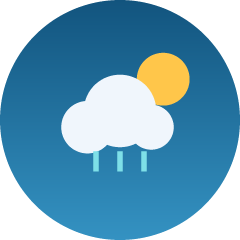

Live conditions from a WeatherFlow Tempest station, on your wrist. Round 480 × 480 AMOLED, Zepp OS 5, version 1.5.0. The watch has no internet: the phone fetches, the watch draws.
Enter the station ID of your own Tempest.
Connected: Backyard — 24°C, 78% RH
| Field | Source |
|---|---|
| Temperature, feels-like | air_temperature, feels_like |
| Humidity, dew point | relative_humidity, dew_point |
| Wind, gust, direction | wind_avg, wind_gust, wind_direction |
| Pressure + trend | sea_level_pressure, pressure_trend |
| UV, solar | uv, solar_radiation |
| Rain today | precip_accum_local_day |
| Lightning | lightning_strike_count_last_1hr |
utils/format.js, which is unit tested.